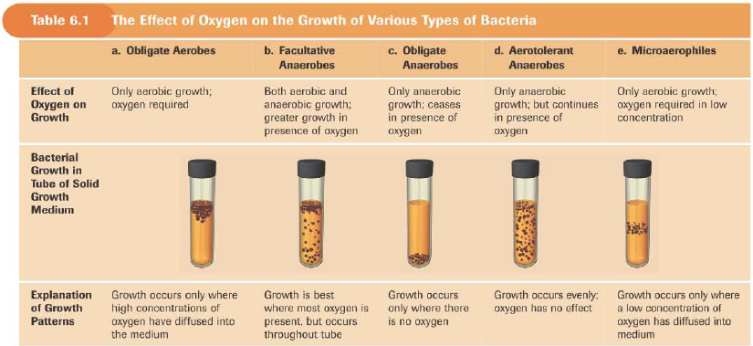

Nguồn lực, mẫu hình oxy và loại môi trường
Vi sinh vật · Slide 5 · 4 trắc nghiệm và 1 tự luận
Bắt đầu học ↓Học trọn chương và làm bộ 80 trắc nghiệm, 15 tự luận
Sau buổi này
- Giải thích các trục nhu cầu và chọn được loại mô tả môi trường.
- Đọc mẫu hình đáp ứng oxy của hệ mô phỏng.
Gợi nhớ
Nêu một yếu tố vật lý và một thành phần hóa học tác động lên sinh trưởng.
Học kiến thức qua hình
Quan sát hình minh họa

Phần đầu bảng trong slide giữ tên từng nhóm và vị trí các đốm tăng trưởng trong hình. Đọc mật độ ở miệng, giữa và đáy ống.
Quan sát · Nhận ra ống có tín hiệu ở nhiều độ sâu và tập trung dày ở phía trên.
Dự đoán · Hồ sơ R, tăng ở cả hai vùng nhưng mạnh hơn nơi có oxy, phù hợp ống nào?
Mở giải thích sau khi dự đoán
Ống b có đốm trên toàn chiều sâu và dày gần vùng nhiều oxy. Mẫu hình này phù hợp kỵ khí tùy nghi trong mô hình.
| Trục | Dạng | Tiêu chí đọc |
|---|---|---|
| Thành phần | Xác định | Danh tính và lượng thành phần đều đã biết |
| Thành phần | Phức hợp | Có hỗn hợp thành phần chưa biết chính xác |
| Mục đích | Phân biệt | Có tín hiệu hiện rõ khác biệt |
| Mục đích | Chọn lọc hoặc tăng sinh | Thay đổi biểu hiện tương đối hoặc tỷ phần của nhóm quan tâm |
Tóm lược slide 17–25. Một môi trường có thể có nhiều thuộc tính.
Đọc hình để tự rút ra cơ chế
Quan sát · Hồ sơ Q liệt kê đủ thành phần và có tín hiệu hiện ra khác nhau cho hai nhóm.
Dự đoán · Q có thể vừa xác định vừa phân biệt không?
Mở giải thích sau khi dự đoán
Có. Một nhãn nói về mức biết thành phần, một nhãn nói về mục đích đọc.
Vật liệu và điều kiện
Carbon đi vào cấu trúc hữu cơ, nitơ đi vào amino acid và base, phospho đi vào nucleotide và phospholipid. Yếu tố sinh trưởng là chất hữu cơ cần bổ sung nếu nhóm đang xét không tự tổng hợp đủ. Nhiệt độ, pH và nước khả dụng mô tả điều kiện hơn là vật liệu cấu tạo.
Đọc đáp ứng với oxy
Trong mô hình gradient, sinh trưởng chỉ ở nơi oxy cao gợi ý hiếu khí bắt buộc, sinh trưởng ở nhiều vùng nhưng mạnh hơn nơi oxy cao phù hợp kỵ khí tùy nghi, và sinh trưởng ở vùng thiếu oxy gợi ý kỵ khí bắt buộc. Kiểu đều dọc gradient hoặc ở một dải hẹp cần xét thêm đặc tính chịu oxy hay ưa oxy thấp.
Hai trục phân loại môi trường
Xác định hoặc phức hợp mô tả mức biết thành phần hóa học. Chọn lọc, phân biệt và tăng sinh mô tả mục đích. Phân biệt dùng tín hiệu để nhận ra khác biệt. Chọn lọc làm thay đổi nhóm nào được hỗ trợ tương đối. Agar thường đóng vai trò làm rắn.
Liên hệ thực tế
Trong câu thi, gạch dưới các từ chỉ giả thiết “biết thành phần” và từ chỉ đầu ra “hiện dấu hiệu” trước khi chọn.
Cụm bài tập
Phiếu mô phỏng P, Q và biểu đồ R
P ghi một hỗn hợp thành phần không xác định hết. Q ghi đầy đủ thành phần hóa học và có chỉ thị màu khác nhau với hai nhóm giả lập. R là biểu đồ nhóm tăng được ở cả vùng có oxy và không oxy, mạnh hơn ở vùng có oxy.
Đối chiếu bài làm
Chọn một chỗ còn phân vân. Giải thích lại bằng lời của mình rồi thử một câu cùng dạng.